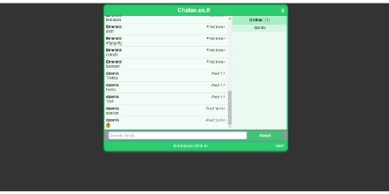
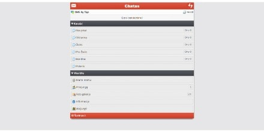

Esu Šarūnas Indrulionis. Man 19 metų. Nuo 16 metų domiuosi internetinėmis technologijomis ir iki 18 metų kūriau tinklapius, pritaikytus mobiliesiems įrenginiams. Per tą laiką pakankamai gerai išmokau HTML bei CSS kalbas, jog sugebėčiau sukurti paprastus WAP tinklapius. Taip pat turiu PHP bei MySQL pagrindus, kurių dėka gebu sukurti paprastus dalykus, kad pridėti funkcionalumo tinklapiui. Šiuo metu daugiausia domiuosi apie Front-end programavimą. Esu energingas, entuziastingas jaunuolis, kuris nori sieti savo ateitį su internetinėmis technologijomis, gilinti turimas žinias bei gebėjimus, ir įgyti naujų.
- Tel.nr.: 862467764
- El.paštas: sarunasindrulionis@gmail.com
- Miestas: Vilnius

Apsilankyti
Mini pokalbių kambarys. Yra dvi versijos: WAP su rankiniu puslapio atnaujinimu ir WEB versija su automatiniu atnaujinimu. Buvo tikrai didelis iššūkis sukurti pokalbių kambarį, į kurį žinutes galima būtų parašyti ir jos atsirastų automatiškai be puslapio perkrovimo. Bet šį iššūkį sėkmingai įveikiau pritaikęs jQuery kodą. Taip pat yra sukurta BBCodų bei šypsenėlių sistema interaktyvesniam bendravimui.
- Technologijos: HTML, CSS, PHP, MySQL, jQuery.

Apsilankyti
Iš mini pokalbių kambario padariau visą pokalbių sistemą, kurioje taip pat sukurtas automatinis pokalbių kambario atnaujinimas su jQuery. 4 pokalbių kambariuose vyksta automatiniai sistemos žaidimai, kad vartotojai turėtų ką veikti, kai niekas neprisijungęs. Yra foto galerija, platus vartotojų bei administracijos meniu, foto galerija, privačių žinučių sistema ir t.t. Panaudota MySQLi (MYSQL Improved) reliacinių duomenų bazių valdymo sistema.
- Technologijos: HTML, CSS, PHP, MySQLi, jQuery.
{kind=link}
{kind=link}
{kind=link}
{kind=link}
{kind=link}
{kind=link}
{kind=link}